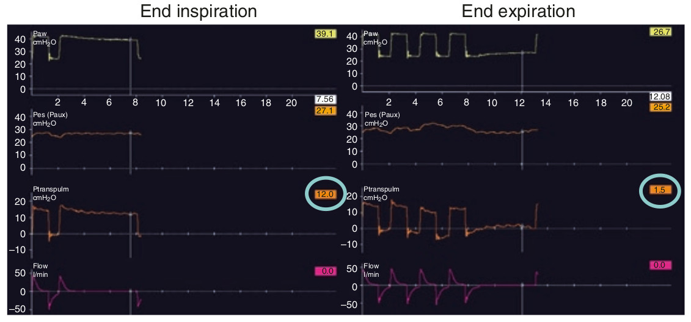

فشار ترانس آلوئولار (PTA) فشار الاستیکی ارتجاعی ریه است که بصورت زیر محاسبه میشود:
PTA = PALV - PES
برای محاسبه فشار ترانس آلوئولار با استفاده از فرمول فوق، اغلب فشار PALV و PES در طی یک انسداد پایان دمی و بازدمی اندازه میگیرند. در زمان انسداد، فشار راه هوائی همان فشار آلوئولار است و فشار ترانس آلوئولار برابر با ترانس پولموناری است. فشار ترانس آلوئولار از این نظر مهم است که سبب بازگشائی ریه هنگام هواگیری و مانور بازگشائی می گردد و در پایان بازدم حبابچه ها را باز نگه میدارد. پس لازم است که مقدار آن مناسب باشد. از سوی دیگر مقدار زیاد آن از طریق افزایش کرنش (strain) سبب آسیب ریه ها میشود. بنابراین مانیتورینگ آن در بیماران ARDS با تنفس پاسیو اهمیت دارد تا بدین وسیله بتوانیم استراتژی ریه باز را اعمال کنیم و از آسیب ری ها جلوگیری نمائیم.

در رابطه با فشار ترانس آلوئولار کدام مورد زیر غلط است؟
۱ - PTA برابر است با PAW منهای PES
۲ - PTA در انتهای دم به عنوان PPLAT منهای PES محاسبه میشود
۳ - PTA را نمی توان بطور دائم مانیتور کرد
۴ - PTA نمایانگر استرس وارد به ریه است
۵ - PTA در انتهای بازدم به عنوان PEEPTOT منهای PES محاسبه میشود